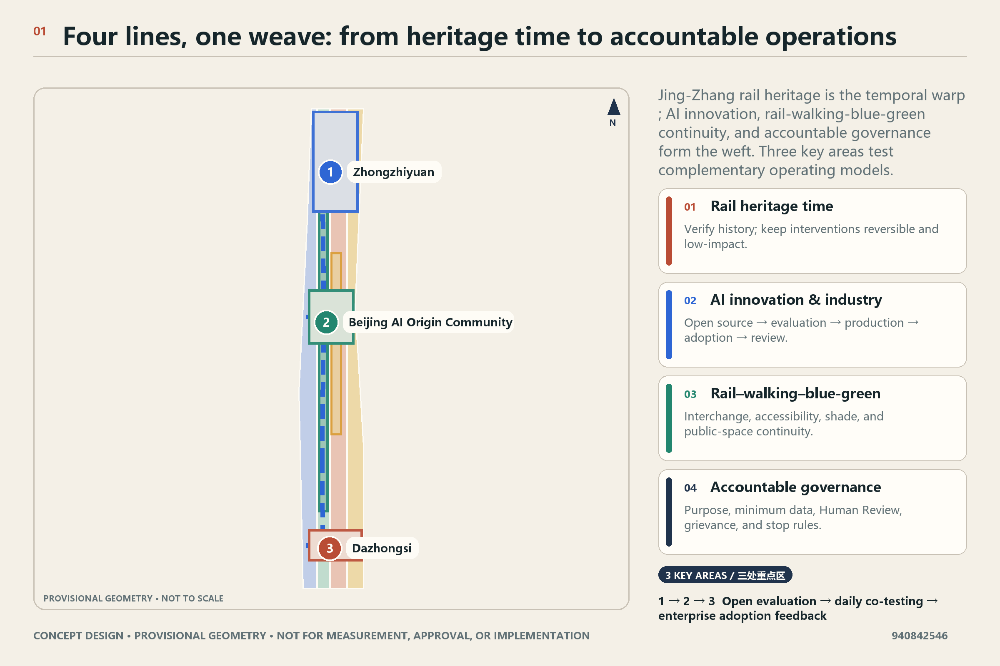
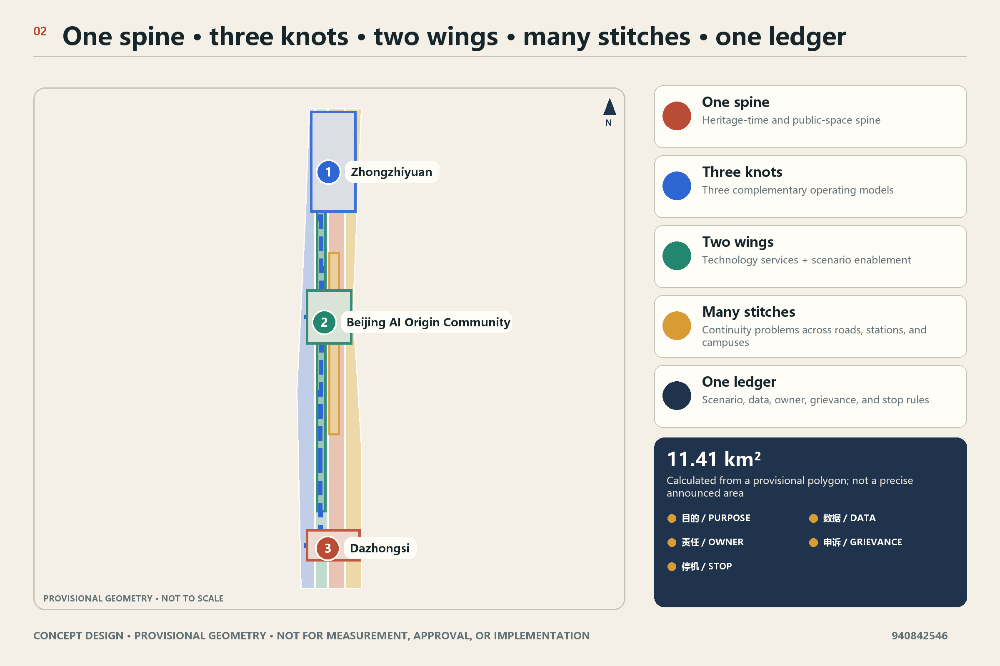
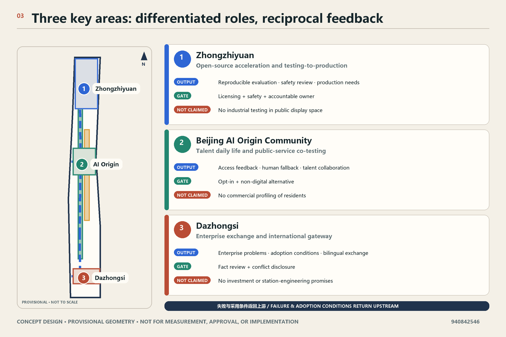
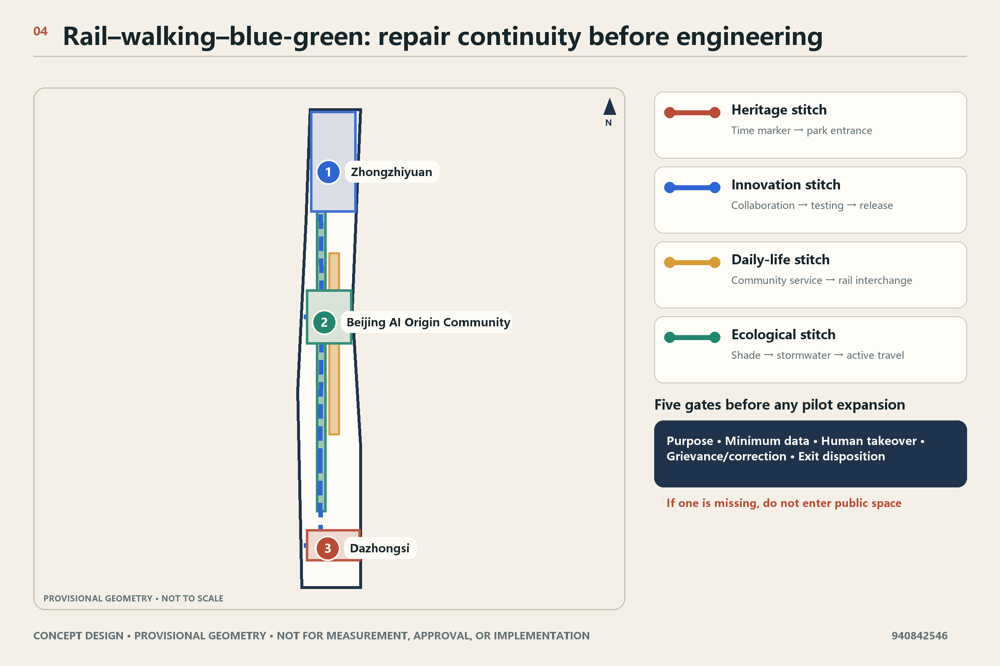
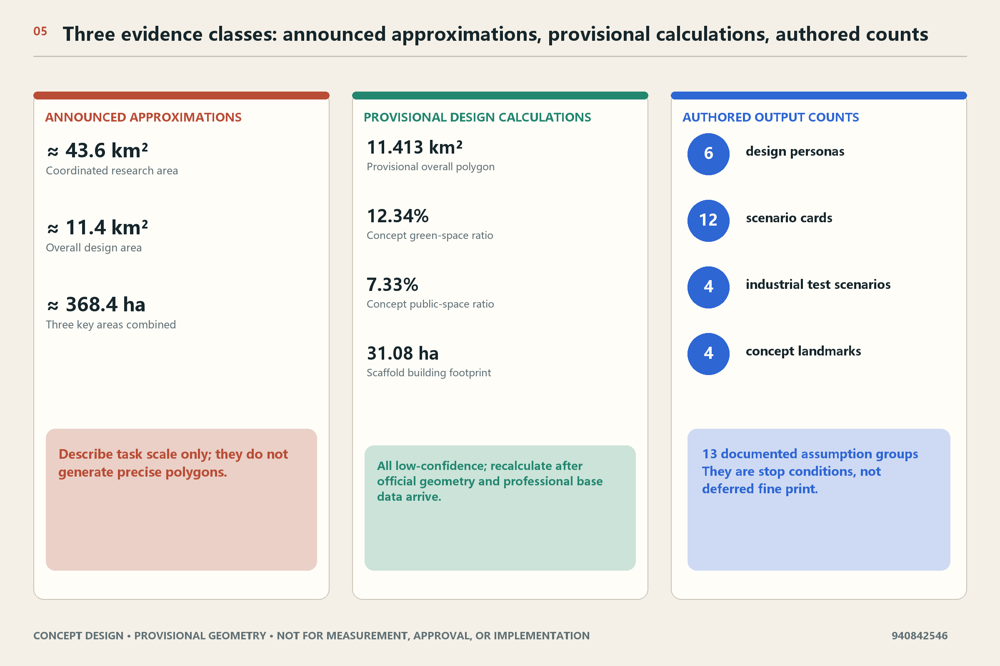

Overview map and three-level scope
Read the same four-line system at coordinated-research, overall-design, and key-area concept-detail scales; provisional geometry is not for measurement.
A four-line symbiosis system for the Centennial Jing-Zhang AI Innovation Belt
CONCEPT DESIGN · PROVISIONAL GEOMETRY · NOT FOR MEASUREMENT, APPROVAL, OR IMPLEMENTATIONThe proposal treats Jing-Zhang heritage, AI innovation, rail-walking-blue-green continuity, and accountable governance as inseparable. If one line fails, the relevant pilot does not expand.
Verify history; keep interventions reversible and low-impact.
Open source → evaluation → production → adoption → review.
Interchange, accessibility, shade, and public-space continuity.
Purpose, minimum data, Human Review, grievance, and stop rules.



All 12 scenarios require a stated purpose, minimum data, Human Review, grievance/correction, stop rules, and exit.

When official geometry, professional base data, or accountable ownership is missing, work remains at concept and reversible-prototype stage.

Read the same four-line system at coordinated-research, overall-design, and key-area concept-detail scales; provisional geometry is not for measurement.
Three differentiated roles, four concept partitions, and a building prototype express design relationships without replacing surveys or statutory controls.
One north-south concept spine and three cross-stitches express continuity goals, not road, rail, or engineering alignments.
Eight concept packages and twelve scenarios bind evidence gates, Human Review, grievance, shutdown, and exit.
Announcement, taskbook, professional depth, and structured evidence are mapped item by item; only deterministic manifest.json and self_check.json results state final status.
The registry separates official announcements, standards, local snapshots, and provisional boundaries; thirteen assumptions retain triggers for official data, professional review, and participation.